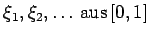

Inhalt Index DeskTop Bronstein

 Wahrscheinlichkeitsrechnung und Mathematische Statistik Mathematische Statistik Monte-Carlo-Methode Zufallszahlen
Wahrscheinlichkeitsrechnung und Mathematische Statistik Mathematische Statistik Monte-Carlo-Methode Zufallszahlen


Zur Erzeugung von Zufallszahlen mit einer beliebigen Verteilungsfunktion F(x) geht man wie folgt vor:
Ausgangspunkt ist eine Folge gleichverteilter Zufallszahlen . Aus ihnen berechnet man die Zahlen für . Dabei ist F-1(x) die Umkehrfunktion zur Verteilungsfunktion  . Dann gilt:
. Dann gilt:
| (16.173) |
d.h., die Zufallszahlen genügen einer Verteilung mit der Verteilungsfunktion  , die stetig und monoton sein muß.
, die stetig und monoton sein muß.